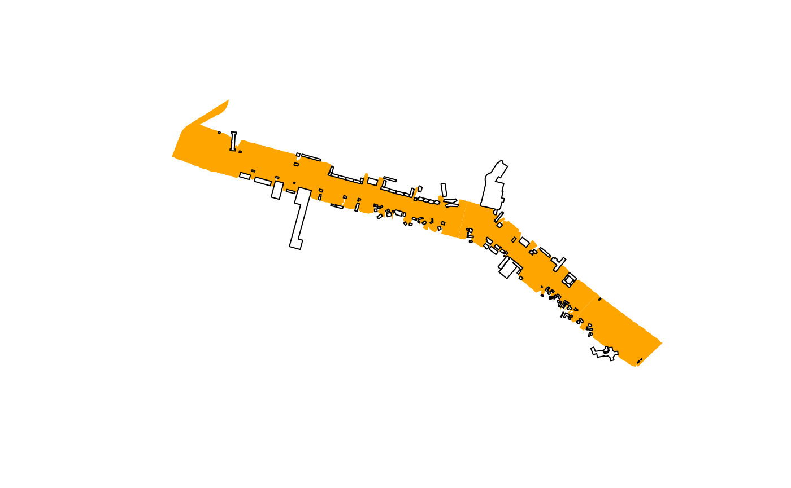

7. Riverspace delineation
Source:vignettes/vig_07-riverspace-delineation.Rmd
vig_07-riverspace-delineation.Rmd
library(rcrisp)
library(sf)
#> Linking to GEOS 3.12.1, GDAL 3.8.4, PROJ 9.4.0; sf_use_s2() is TRUE
bucharest_osm <- get_osm_example_data()
bucharest_dem <- get_dem_example_data()River space delineation is a delineation step that uses the river and buildings as input to generate a polygon representing the space between the river and the first line of buildings. We will use River Dâmbovița of Bucharest as the river and the buildings surrounding it as input.
buildings <- bucharest_osm$buildings
river <- bucharest_osm$river_surfaceThe delineate_riverspace() function takes the building
polygons and the river surface polygons as input. If no river is
provided, it will return an error message. If no buildings are provided,
it will return an unobstructed buffer of a given radius with a warning
message. The function returns an sf polygon.
riverspace <- delineate_riverspace(river, buildings)We visualise the riverspace in a subset of segments.
riverspace_segment_2_4 <- riverspace |>
st_intersection(bucharest_dambovita$segments[2:4])
buildings_segment_2_4 <- buildings |>
st_sf() |>
st_filter(bucharest_dambovita$segments[2:4], .predicate = st_intersects) |>
st_filter(riverspace_segment_2_4, .predicate = st_intersects)
plot(riverspace_segment_2_4, col = "orange", border = NA)
plot(buildings_segment_2_4, add = TRUE)